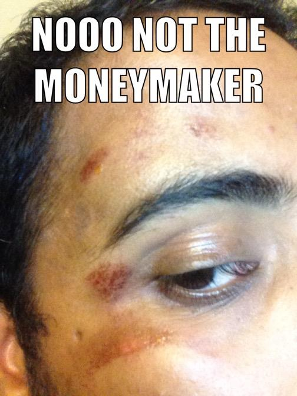

Jay is a unique human known by many, understood by few. People who know him, won't be surprised to learn that head trauma has followed Jay throughout life - starting from the ripe age of 9. Other famous ppl, such as Jesus, are lucky enough to share in the Jay's BDAY. He now lives in Evanston IL, known for its Whole Foods a-plent and diversity.
...So he claims
Jay ventured to the wilds of Peru to find himself and save the world and do other Millenial stuff